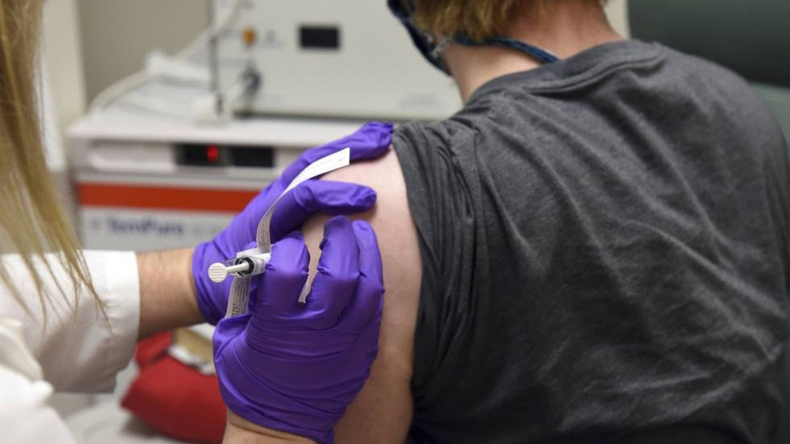
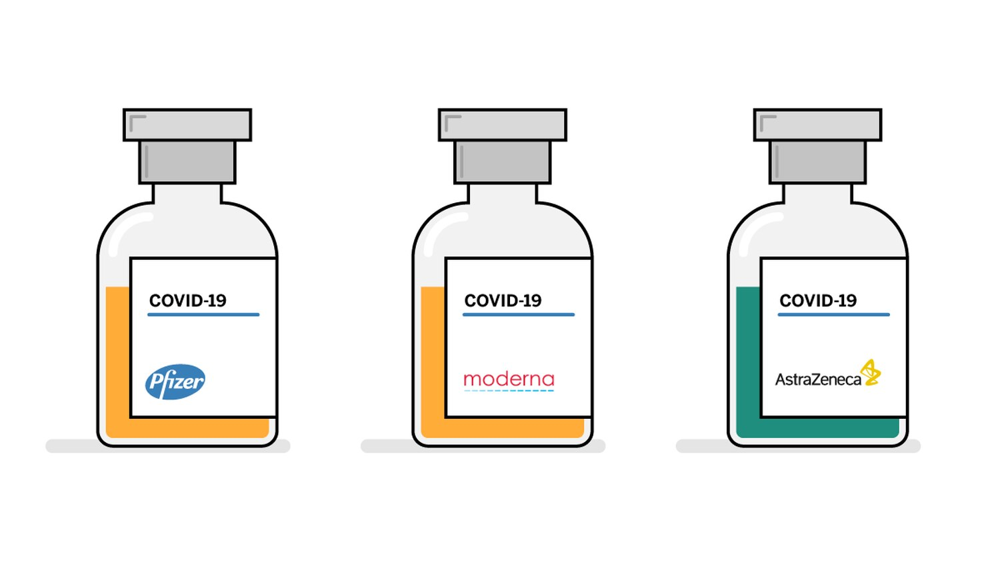

Los hospitales ingleses recibirán las primeras dosis de la vacuna contra el coronavirus a partir del 7 de diciembre
Las autoridades del sistema de salud británico (NHS en inglés) han avisado a los hospitales de Inglaterra de que recibirán dosis de la vacuna contra la covid-19 de Pfizer y BioNTech a partir del 7 de diciembre, según han adelantado varios medios británicos. El Gobierno ha contratado 40 millones de dosis del medicamento, que requiere una doble toma para conseguir una eficacia del 95%. De momento, la vacuna de Pfizer y BioNTech no ha recibido la aprobación de las autoridades sanitarias británicas. La institución encargada de dar luz verde al uso de la vacuna es la Agencia Reguladora de Medicamentos y Productos Sanitarios (MHRA). Este organismo lleva más de una semana analizando la vacuna, a partir de un requerimiento del Gobierno de Boris Johnson. En circunstancias normales, sería necesario contar con la luz verde de la Agencia Europea del Medicamento, porque el Reino Unido sigue sometido al control de la UE hasta que concluya el periodo de transición del Brexit, el próximo 31 de diciembre. La ley británica, sin embargo, permite que la MHRA adelante su autorización en el caso de “urgente necesidad”. El mismo proceso, por orden expresa de Boris Johnson, podría aplicarse a la vacuna desarrollada por la Universidad de Oxford y la farmacéutica anglo-sueca Astrazeneca. La prensa británica señala que los responsables del NHS esperan que la MHRA conceda la autorización para administrar la vacuna la semana que viene. La MHRA ha destacado que sus procedimientos en el análisis de la vacuna son tan rigurosos como en cualquier otro proceso. Los primeros en recibir la vacuna serán los trabajadores sanitarios, antes que los mayores de 80 años y los usuarios de residencias, a pesar de que, inicialmente, el Ejecutivo de Boris Johnson había había catalogado a estos dos colectivos como los “prioritarios” para recibir la inmunización. Las características de la vacuna de Pfizer han cambiado el orden: se puede estropear a partir de sucesivos traslados y se debe conservar a 70 grados bajo cero, lo que complica su uso, de momento, más allá del personal sanitario.  El Reino Unido es uno de los países más golpeados por la pandemia del coronavirus. Según la Organización Mundial de la Salud (OMS), acumula 1.589.305 contagios y 57.551 decesos. El jueves alcanzó 695 muertes en un solo día. La farmacéutica estadounidense Pfizer anunció el 18 de noviembre que su vacuna tiene un 95% de eficacia. Los datos tienen plena validez estadística, ya que el ensayo clínico de unos 44.000 pacientes alcanzó la meta para ello: que se registrasen 170 contagios. De ellos, 162 infecciones se han dado en el grupo de personas que recibió un placebo (agua con sales) y ocho en el que recibió las dos dosis de la vacuna, lo que supone una eficacia del 95%. Esta eficacia aplica a todas las edades, sexos y razas de los participantes en el ensayo, realizado en gran parte en Estados Unidos. La efectividad en las personas mayores de 65 años es de un 94%. Los datos también sugieren que la vacuna previene los casos graves de covid, pues de los 10 registrados, solo uno era del grupo vacunado, según la compañía. Pfizer ha dicho que este año podrá fabricar vacunas para 25 millones de personas y en 2021 para unos 650 millones. En la fabricación participarán plantas de Pfizer en EE UU así como las de BioNTech en Alemania, ha dicho la compañía. España recibirá dosis de la vacuna de Pfizer gracias al acuerdo suscrito entre la farmacéutica y la Comisión Europea. En total, la Comisión ha asegurado 300 millones de dosis. “Las negociaciones ya han concluido y se firmará el acuerdo en los próximos días”, confirmó en una entrevista con EL PAÍS y otros medios europeos Stella Kyriakides, comisaria de Salud y Seguridad Alimentaria. Este es solo uno de los acuerdos de Bruselas para recibir dosis de la vacuna: en total ha acordado 1.000 millones de dosis a través de pactos con Moderna, AstraZeneca, Sanofi-GSK, Curevac, Johnson & Johnson y Pfizer. También anunció que su inmunización funciona la empresa estadounidense Moderna, a la espera de que los organismos regulatorios le den el visto bueno. El 16 de noviembre la compañía anunció que tiene una eficacia preliminar del 94,5%. La farmacéutica británica AstraZeneca y la Universidad de Oxford hicieron un confuso anuncio de una eficacia de entre el 62% y el 90% de su vacuna el 23 de noviembre, pero estos resultados son objeto de dudas: ocultaron que sus mejores resultados se han observado solo en un grupo de vacunados menores de 55 años.
La empresa Moderna anuncia que su vacuna contra la covid tiene casi un 95% de eficacia
La empresa estadounidense Moderna y los Institutos Nacionales de la Salud (NIH) de EE UU han anunciado este lunes que su vacuna experimental contra la covid, una de las más avanzadas del mundo, tiene una eficacia preliminar del 94,5%, una cifra superior incluso al 90% comunicado por la compañía Pfizer hace una semana. Moderna y los NIH tienen en marcha un ensayo con 30.000 personas en EE UU. La mitad de los participantes ha recibido la vacuna y la otra mitad una inyección de agua con sales como placebo. El primer análisis se ha realizado tras detectar 95 infecciones sintomáticas, 90 de ellas en el grupo que no recibió el medicamento. “Lo más importante es que solo 11 de las 95 personas que enfermaron sufrieron una forma grave de covid, con problemas respiratorios y necesidad de hospitalización. Y las 11 estaban con el placebo. Esto sí que no lo esperábamos ni en nuestros sueños”, explica a EL PAÍS el español Juan Andrés, director técnico de Moderna.
La compañía estadounidense, como hizo Pfizer hace una semana, ha presentado sus resultados mediante un comunicado de prensa, sin publicar por el momento un estudio científico completo revisado por expertos independientes. La empresa destaca que su ensayo incluye a 7.000 personas mayores de 65 años y a otras 5.000 menores de esa edad, pero con enfermedades crónicas vinculadas a un mayor riesgo de covid grave, como la diabetes, la obesidad y las patologías cardiacas. El 42% de los participantes pertenece a algún grupo de riesgo. “Esto sugeriría que la vacuna también es efectiva en los más vulnerables, algo que Pfizer aún no ha confirmado”, opina la viróloga Isabel Sola, codirectora de otra vacuna experimental contra la covid en el Centro Nacional de Biotecnología, en Madrid.
La vacuna de Moderna y los NIH requiere dos dosis, espaciadas 28 días, y en EE UU tendrá un coste de unos 25 dólares (unos 21 euros) por inyección, según los cálculos de Juan Andrés. La compañía pretende solicitar “en las próximas semanas” a las autoridades estadounidenses un permiso para su uso de emergencia. Moderna tiene previsto fabricar antes de final de año 20 millones de dosis para su distribución en EE UU. Su plan es producir entre 500 y 1.000 millones de dosis en 2021. La empresa ya trabaja con dos cadenas de suministro, una en EE UU y otra en Europa, con una etapa final en los laboratorios farmacéuticos Rovi, en Madrid. Las autoridades estadounidenses calculan que han invertido unos 2.000 millones de dólares para facilitar el desarrollo y la fabricación de esta vacuna experimental.
“El estudio preliminar ha concluido que no hubo problemas de seguridad significativos. La mayoría fueron casos suaves o moderados, de corta duración”, subraya Andrés. La empresa ha comunicado efectos como un dolor en el lugar de la inyección (en el 2,7% de los vacunados), fatiga (casi en el 10%), dolor de articulaciones (5%) y dolor de cabeza (4,5%). “Son los síntomas que uno tiene con una gripe moderada”, señala el ejecutivo de Moderna.
La firma biotecnológica, con sede en Cambridge, había afirmado hasta ahora que su vacuna aguantaba hasta una semana con temperaturas de entre 2 y 8 grados, las típicas de un frigorífico. “Lo que anunciamos hoy es que se espera que la vacuna permanezca estable 30 días en la nevera. Esto es un cambio absolutamente radical en cuanto a la flexibilidad para hacer llegar la vacuna a todas partes. Donde no haya congeladores puedes llevar la vacuna y tenerla 30 días almacenada en la nevera, para así poder vacunar en residencias de ancianos, en pueblos pequeños, en sitios donde no haya grandes infraestructuras”, señala Andrés. El medicamento permanece estable al menos seis meses a 20 grados bajo cero, según la empresa.
La vacuna experimental de Moderna, como la de Pfizer y su socio alemán BioNTech, no está elaborada con virus atenuados o fragmentos de virus, como se ha hecho tradicionalmente, sino con material genético del nuevo coronavirus: su ARN, una especie de receta con la que las propias células humanas fabrican proteínas inofensivas del virus. Las defensas de la persona vacunada se entrenan frente a estos componentes virales, sin riesgo de sufrir la covid por la inyección. “Una diferencia a favor de Pfizer es que sus dosis son de 30 microgramos y las de Moderna son de 100 microgramos. Una cantidad de ARN tres veces mayor también multiplica el coste de la vacuna”, advierte Sola.
“Son resultados de eficacia muy positivos, aunque aún provisionales. La principal limitación de esta nueva tecnología de vacunas de ARN es el coste de producirlas, pero en cuanto a eficacia y seguridad están mostrando que tienen un buen potencial”, añade la viróloga.
La Agencia Europea de Medicamentos (EMA) ha comunicado este lunes que ha iniciado la revisión de los primeros resultados de la vacuna experimental de Moderna, un proceso acelerado para su posible autorización si demuestra ser una inyección segura y eficaz. La Comisión Europea ya anunció en agosto un preacuerdo con la empresa estadounidense para disponer de 80 millones de dosis, con la opción de adquirir otros 80 millones una vez que se comprobase su validez. La negociación continúa, según explica Juan Andrés.
Las autoridades europeas ya han llegado a acuerdos preliminares para comprar más de 1.200 millones de dosis de diferentes vacunas experimentales, como la desarrollada por la Universidad de Oxford y la farmacéutica británica AstraZeneca, la del tándem BioNTech-Pfizer, la de la biotecnológica alemana Curevac, la de la estadounidense Johnson & Johnson y la creada por la multinacional francesa Sanofi y la británica GSK. Hay más de 200 vacunas experimentales diferentes contra la covid, según las cifras de la Organización Mundial de la Salud, y medio centenar de ellas ya se están probando en humanos. Once candidatas están en la recta final, con ensayos en decenas de miles de voluntarios.
Los resultados preliminares de la vacuna experimental de Moderna han sido analizados por un comité independiente de expertos elegidos por los NIH. “Ayer, cuando supe los resultados, me abracé a mi mujer y lloré como un niño”, cuenta el español Juan Andrés, nacido en Madrid en 1964, pero instalado en EE UU desde hace 30 años. El comité volverá a revisar los datos del ensayo cuando se alcancen las 151 infecciones entre los 30.000 participantes, algo que parece inminente. “Tienen que completar las 151 para conseguir el dato de eficacia con suficiente potencia estadística. También necesitan completar más de dos meses de seguimiento para confirmar que es segura. Como con Pfizer, sigue la incógnita de cuánto tiempo durará la inmunidad”, opina la viróloga Isabel Sola.
El ya célebre inmunólogo Anthony Fauci —director del Instituto Nacional de Alergias y Enfermedades Infecciosas de EE UU, perteneciente a los NIH— ha declarado este lunes que los nuevos resultados de su vacuna experimental son “impresionantes” e incluso hacen ver “la luz al final del túnel”, pero ha hecho un llamamiento para reforzar las actuales medidas preventivas contra el nuevo coronavirus: utilizar mascarilla, evitar espacios abarrotados de gente, mantener la distancia física con otras personas y lavarse bien las manos.
Las enormes diferencias entre las vacunas de Pfizer, Moderna y Oxford
La humanidad ha conseguido en poco más de 10 meses desarrollar tres vacunas experimentales con una aparente altísima eficacia contra el nuevo coronavirus. Las tres son muy prometedoras, pero cada una de ellas tiene sus ventajas e inconvenientes. Estas son sus diferencias.
